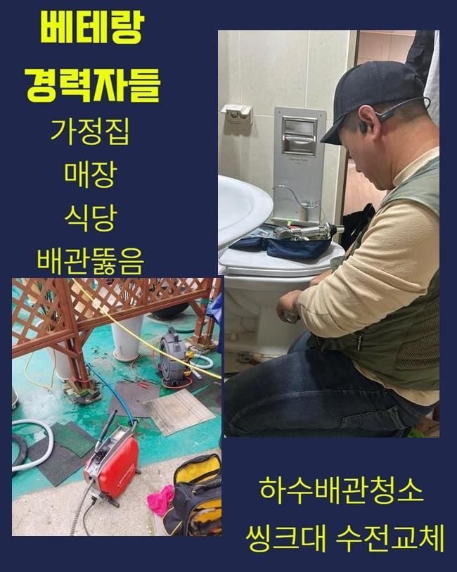
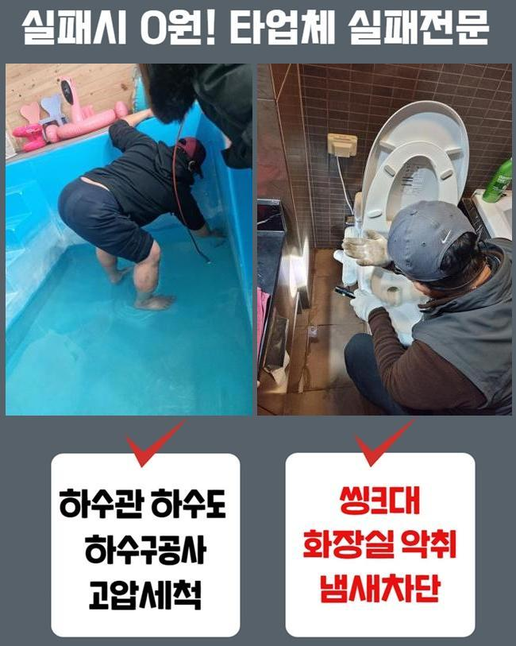
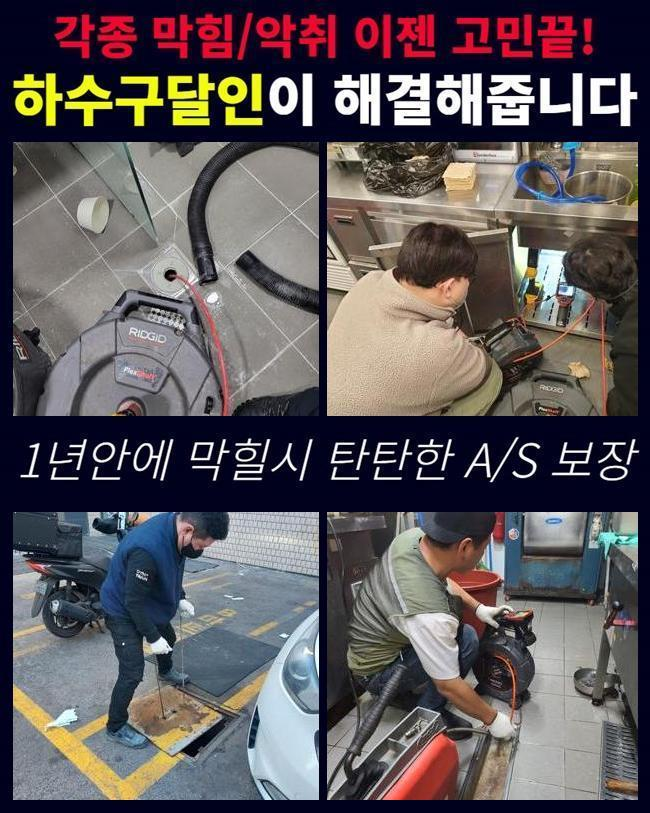
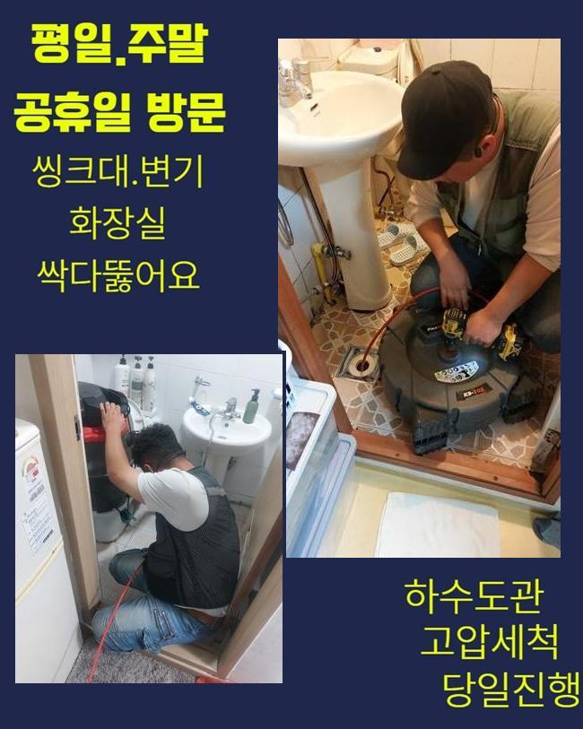
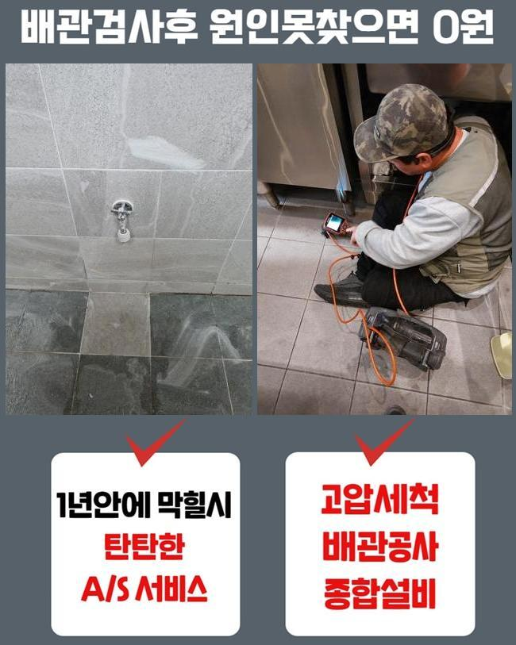

🏠 천안 와촌동싱크대배수구막힘 쌍용2동 배수로뚫기 배관전문
천안 싱크대막힘 전문 시공 후기

📋 작업 개요
- 위치: 천안
- 서비스 유형: 싱크대막힘, 하수구막힘, 배관막힘, 역류해결, 뚫는업체, 배관청소
- 작업 일시: 2025. 5. 28. 20:47
- 업체명: 하수구수사대 (010-5615-2118)
🔍 문제 상황
천안 와촌동싱크대배수구막힘 쌍용2동 배수로뚫기 배관전문
화장실공간을 이용할 때 수많은 원인때문에 배수구들이 제 기능을 못하는 경우들이 비일비재해요
마찬가지로 화장실공간은 생활부분에서 필히 이용되고 있는 장소라서 평소에 주의들을 쏟는것이 좋겠죠
예측 불가한 원인들이 통수오류의 연유가 되므로 위같은 흐름의 인지들이 중요한데요
먼저 정체의 이유중에서 비중이 큰것이 석회이물이 하수관에 축적되는거죠
이물이 증가되는 까닭으론 1차적으로 샤워용품들과 연관이 되어있고 수도의 잔여물질과 섞이면서 석회들이 생겨나는 결함이 생겨납니다
마찬가지로 머리카락과 같은것들이 배수관에 축적되면 증세는 중첩될지 모릅니다
그리고 관리해주는것에 등한시 한다면 이러한 석회들이 잘 쌓이게 됩니다
그리고 보건과 연관된 부분들에도 예상치못하게 악영향들을 끼치는 까닭에 간단한 문제라고 판단해서는 안되는데요
석회의 잔해는 하수도에서 고착되며 정체현상을 유발합니다

🔎 원인 분석
💡 전문가 진단: 정밀 진단 장비를 사용하여 슬러지의 고착 여부를 판명하고 타격/세척 작업을 실시했습니다.
단단히 굳게되면 그저 클린용액들로 사라지게하는것이 어려워요
심지어, 머리카락과 샤워용품등에서 배출되는 잔해가 하수도로 배출되면서 누적되는 경우들도 종종 보이죠
덧붙여 제모 등을 하실 때 침전되는 오염물들과 세정액처럼 이런저런 유기물질들도 통수오류의 원인들로 자리잡습니다
이같은 증세들이 발생되면 심한 경우 역류가 생겨나 하수들이 바깥쪽으로 솟게되는 결함들이 나타나게 됩니다
2차적인 피해들은 단순하게 불쾌감들과 보건적인 증상들을 생겨나게 하므로 주의들이 필요하겠습니다
문제들이 생겼난 시점에 간단한 문제라고 여기고 무분별하게 조치하다보면 의도하지 않은 결과를 마주할 수 있기에 증상들이 생기게되면 신속히 전문인의 손길을 빌리는게 도움됩니다
그러면 통수불량의 문제들이 나타났을 경우 무슨 방법으로 결함들을 해결해나가는지 꼼꼼히 설명드릴게요
달려갔던 고객분 댁의 결함이라 함은 욕실공간이 막히게되어 의뢰자께선 생활측면에 있어서 불편들을 감당해야 했어요
육안으로 보니 샤워부스와 세면대배수관이 동시다발적으로 막히게되어 있었기 때문에, 이용할 때 곤란한 상황들이 연출되었어요
해당 문제들은 예상치못한 큰 곤란함을 마주하게 만들고 빠른 조치가 요구되죠
증세를 해결하고자 첫단추로는 석션기기를 이용하여 배수관에 찰랑거리는 오수들을 사라지게끔 했어요

🔧 작업 과정
석션장비는 흡입하는 기능들을 자랑하고 부유하고 있는 물을 서둘러 제거해주는데에 그 역할을 톡톡히 해요
그 다음으로 내시경장비로 하수관의 상태들을 체크해봤는데 혹시라도 물들이 고인 모습이라면 내시경장비로 확인하는것이 힘들기에 부유물들을 사라지게하는 과정들이 필요하겠습니다
석션기기로 청소들을 해주었으나 내측의 공간들이 충분치 않은것을 파악했는데요
이런 문제사안은 여기저기 누적된 석회이물들을 제거시켜야 깊은 배관 상황들을 확인하게 됩니다
석회라 함은 굳게되면 하수관을 막히게 만드므로 정체의 원인들 중 하나로 꼽히는데요
이 결함들을 없앨 목적으로 샤프트장치와 고착물의 유화제들을 부어주어 수월하게 제거해보고자 했어요
유화제를 부어주었더니 버블이 생기며 석회들이 부드러워졌고 샤프트도구를 이용해서 고착되어버린 석회잔해를 분쇄시켜 사라지게끔 했어요
샤프트장비는 상단에 체인들이 달린 까닭에 벽쪽에 흡착되어버린 슬러지형상의 이물들을 타격한 후 청소해줍니다
고착물에서 조각난 석회이물들의들은 석션장비를 통해 수월하게 청소하려고 했는데요
제거들이 마무리되고 재차 내시경기기로 검사해보았어요
잔여물질들이 사라진 걸 인지했지만 가벼운 잔여물질들이 안보이는 것만으론 안심해선 안되죠
수돗물이 원활히 흐르는지 테스트해보는 절차들이 실시되어야했죠
수도들을 가득 담아 하수도의 배수시험을 진행해주었고 이전과 달리 수월히 흘러나가는걸 목격했어요
최종적으로 고객이 화장실을 쓰는 시점에 염두에 두어야 할 사항들도 안내드렸습니다
미리 여과부품등을 놓아주시고 주기성을 가지고 관리해주는게 문제들이 생겨나지않게하는 묘책이라는것을 안내했답니다
어렵지않은 대처로 배수불량을 방지하는것에 도움들로 작용 되는것을 다시 한번 설명드렸습니다


✅ 작업 완료
이렇게 욕실 배수불량을 복구하는 절차를 자세하게 설명드렸습니다
앞서서 관심을 기울이면 이러한 고충을 마주하지 않아도 된다는걸 기억하시기바라요
미리미리 준비하시는게 최고의 방법이라 할 수 있고 주기적인 청소들은 이러한 증상을 사전에 예방해 낼 수 있어요
안정성과 위생도 생각하시어 배수시설이 있다면 설명드린 내용들을 기억해두셨다가 실천해주시면 됩니다
욕실들은 생활측면에서 없어선 안될 곳이므로 관리책 실시에 등한시 하지 않는게 도움됩니다


⚠️ 주방 싱크대 배관 막힘 예방 수칙
- ✅ 기름기가 묻은 식기나 프라이팬은 설거지 전 키친타올로 반드시 기름때를 닦아내세요.
- ✅ 주기적으로 싱크대 개수대에 뜨거운 물을 가득 받아 한 번에 내려 배관 내부 기름을 씻어내세요.
- ✅ 배수구 거름망을 미세한 필터로 사용하시고 음식물 찌꺼기가 틈으로 새어 들지 않게 관리하세요.
- ✅ 베이킹소다와 식초를 뜨거운 물과 함께 일주일에 한 번씩 부어주면 배관 살균과 막힘 예방에 좋습니다.
💡 핵심 정리
- 확실한 장비 작업(내시경 점검 및 샤프트 스케일링)으로 원인을 뿌리 뽑습니다.
- 작업 후 1년 이내에 동일한 부위 재발 시 100% 무상 A/S 서비스를 보장합니다.
- 서울 · 경기 · 인천 전 지역에 24시간 언제든 긴급 출동할 수 있도록 항시 대기 중입니다.
❓ 자주 묻는 질문 (FAQ)
🚨 천안 싱크대막힘 문제로 고민이신가요?
정확한 원인 진단과 확실한 시공으로 재발 없는 해결을 약속드립니다.
24시간 긴급 출동 | 서울 · 경기 · 인천 전지역 | 1년 내 재발 시 무상 A/S